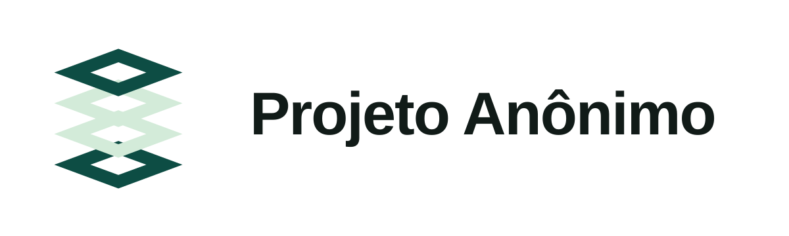
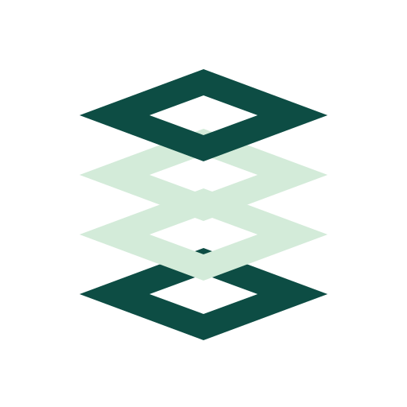
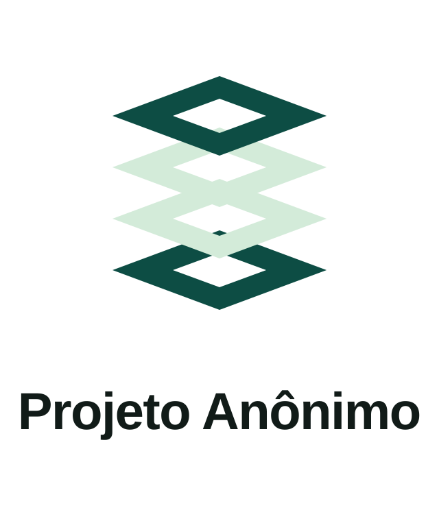

Horizontal · fundo claro
Para cabeçalhos, assinaturas e superfícies claras.
Baixar SVG horizontal claroIdentidade de marca · Guia de aplicação
Logos originais, cores oficiais e regras para comunicar o Projeto Anônimo com clareza — no site, nas redes e nos materiais institucionais.
TECNOLOGIA · AUTONOMIA · IMPACTO SOCIAL
Tecnologia não é um fim em si mesma. É infraestrutura para participação, autonomia e transformação real nos territórios.
Manifesto e assinatura oficial conforme PA-BRD-001, seção 1. Preservar o nome Projeto Anônimo, os acentos e os pontos médios na assinatura.
Assinatura oficial: TECNOLOGIA · AUTONOMIA · IMPACTO SOCIAL
“Tecnologia com propósito” não substitui automaticamente a assinatura oficial. Seu uso complementar depende das diretrizes documentadas para cada peça.
O símbolo tem quatro camadas isométricas vazadas. O wordmark usa IBM Plex Sans SemiBold convertida em curvas. Utilizar os SVGs originais; não reconstruir a marca com texto ou geração de imagem.

Para cabeçalhos, assinaturas e superfícies claras.
Baixar SVG horizontal claroVersão com contraste adequado a superfícies escuras.
Baixar SVG horizontal escuro
Preservar a geometria, os vazados e a proporção.
Baixar SVG do símbolo
Usar quando espaço, proporção e contraste permitirem.
Baixar SVG verticalNão alterar: camadas, curvas, cores internas ou proporções. Não esticar, girar, adicionar sombras, efeitos ou textos ao logo. Manter espaço livre ao redor; não há medida universal de respiro em pixels comprovada para o logo neste guia.
Paleta canônica conforme PA-BRD-001, seção 4. Usar os códigos HEX abaixo, sem extrair cores de capturas de tela ou substituir por verdes parecidos.
#111B18RGB 17, 27, 24
Texto e fundos escuros
#0D4D44RGB 13, 77, 68
Marca e elementos institucionais
#D3EBD9RGB 211, 235, 217
Destaques e camadas claras
#F2FAF4RGB 242, 250, 244
Fundos claros e texto sobre escuro
#E7F4EARGB 231, 244, 234
#9BC8ABRGB 155, 200, 171
#C1DDC8RGB 193, 221, 200
Atenção: o verde quase preto deve usar exatamente #111B18. Não reutilizar códigos incorretos ou aproximações. A paleta azul-marinho de materiais anteriores é legada; não é o padrão para novas peças.
No logotipo: IBM Plex Sans SemiBold, convertida em curvas. O SVG não precisa de uma fonte instalada para reproduzir o wordmark.
Propostas no manual: Inter ou Space Grotesk nos títulos; Roboto ou Montserrat no corpo; Inter para números e metadados. A combinação definitiva ainda precisa de decisão institucional.
Limitar a composição a duas famílias por peça. A aparência dos textos desta página não homologa uma combinação editorial. Os logotipos vetoriais preservam seu desenho independentemente das fontes instaladas.
| Aplicação | Dimensões | Área de respiro |
|---|---|---|
| Feed vertical | 1080 × 1350 px | 96 px |
| Feed quadrado | 1080 × 1080 px | 96 px |
| Story / vídeo vertical | 1080 × 1920 px | Confirmar a área segura na plataforma de destino antes de produzir a peça. |
| Open Graph | 1200 × 630 px | Adequar composição e legibilidade. |
O manual estabelece contraste de texto de pelo menos 7:1 e Alt Text em peças visuais. Preferir texto #111B18 sobre #F2FAF4 ou #D3EBD9; texto #F2FAF4 ou #D3EBD9 sobre #0D4D44. Medir cada composição e os estados interativos.
No site, fornecer texto alternativo a imagens informativas; imagens puramente decorativas podem usar alt="". Verificar foco visível, navegação por teclado e leitura em telas pequenas. Essas diretrizes não constituem certificação de acessibilidade do site.
Canva e outras ferramentas podem sugerir uma identidade a partir do site. Conferir manualmente os logos, os sete códigos de cor, as fontes e a assinatura. Não há garantia de leitura do manifesto JSON, sincronização contínua ou preservação de todas as regras.
Vetores individuais e informações estruturadas para mantenedores e ferramentas. As duas versões monocromáticas são símbolos, não logos completos.